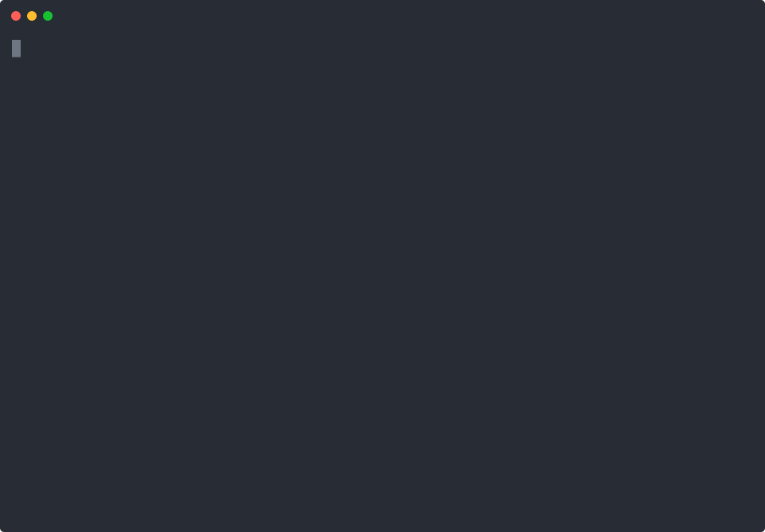

Surgical, single-command migration tools for Lambda runtimes, Amazon Linux, and other AWS platform deprecations. Scan your account. Codemod your code. Patch your IaC. Deploy canary with auto-rollback. Ship before the deadline.

Each kit targets one AWS deprecation with one coherent CLI. Works offline for demos and CI. No AWS creds required to try.
Scan all Node Lambdas. Rewrite import assert → import with. Audit native bindings (sharp, bcrypt, canvas). Patch SAM, CDK, Terraform, Serverless. Canary deploy with CloudWatch-alarm auto-rollback.
Scan EC2, launch templates, EKS node groups, ECS task defs, Beanstalk for AL2. Translate yum packages to dnf with a 50-package curated table. Generate Packer template, diff cloud-init, patch Ansible. Migration runbooks for ASG / EKS / ECS / EB.
Scan Python Lambdas by severity and days-to-EOL. Codemod collections.abc, distutils, asyncio, datetime.utcnow(). Audit requirements.txt for cp312 wheel availability (30+ package table). Patch IaC. Canary deploy + rollback.
One consistent shape across all three: scan → fix → test → deploy → rollback. Pick any step. Skip any step. Re-run any step.
Read-only API calls find every resource on the deprecated runtime. Output as table / JSON / CSV / Markdown. Fixture mode works offline.
Narrow, mechanically-safe code rewrites. Everything ambiguous is flagged for human review, not auto-changed. Always dry-run by default.
Native test suite on every kit (node --test / pytest). 116 tests total. Every command, every format, every exit code.
Staged canary: 5% → 25% → 50% → 100%. Every stage checks a CloudWatch alarm. Trip = instant auto-rollback.
Tested rollback path on every kit. Alias re-point for Lambda. Launch Template revert for EC2. Blue/green node-group swap for EKS.
The CLIs are MIT-licensed — fork, use, resell. Paid tiers handle the parts that matter to a busy team: hash-anchored audit reports, real PRs opened on your repo, org-wide licenses, and continuous drift monitoring.
Yes. Every line of code on GitHub is MIT. You can run the CLI, scan your account, codemod your code, patch your IaC, and deploy without paying us a cent. Paid tiers only add the docs/videos/consulting around the kits.
CloudQuery gives you the inventory. We give you the inventory plus the codemod plus the IaC patch plus the staged deploy plus the tested rollback — scoped to one specific deprecation. AWS Migration Hub is for lift-and-shift between regions/accounts, not runtime upgrades. Custom scripts exist, but nobody has tested-end-to-end-with-rollback custom scripts for these exact deadlines.
They're designed not to. Every kit rewrites only the narrow, mechanically-safe patterns (like import assert → import with) and lints everything ambiguous so you decide. Every kit defaults to dry-run. Every apply has a dry-run preview first. And every kit ships with a full test suite covering both modes.
That's the point. Every kit's deploy command requires a CloudWatch alarm ARN with --apply. At every canary stage it checks the alarm state. If the alarm is in ALARM state, it instantly reverts the alias to the previous stable version and exits non-zero. You get rollback whether you wanted one or not.
A small independent shop. No VC. No pivot. We ship one kit per deadline. If we can't ship it at kit quality in one week, it doesn't ship.
The one whose deadline is closest. If you're running Lambda on Node 20, start with lambda-lifeline — deadline 2026-04-30. Running EC2 on Amazon Linux 2? al2023-gate, deadline 2026-06-30. Running Python Lambdas? python-pivot. Running all three? Bundle.
Yes. Migration Pack purchases auto-refund if the opened PR's CI fails within 7 days. Audit PDFs include a verification URL to confirm authenticity.
{kind=link}
{kind=link}